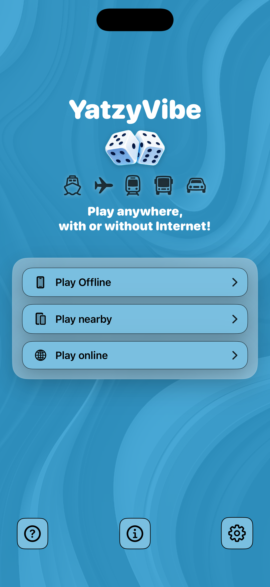
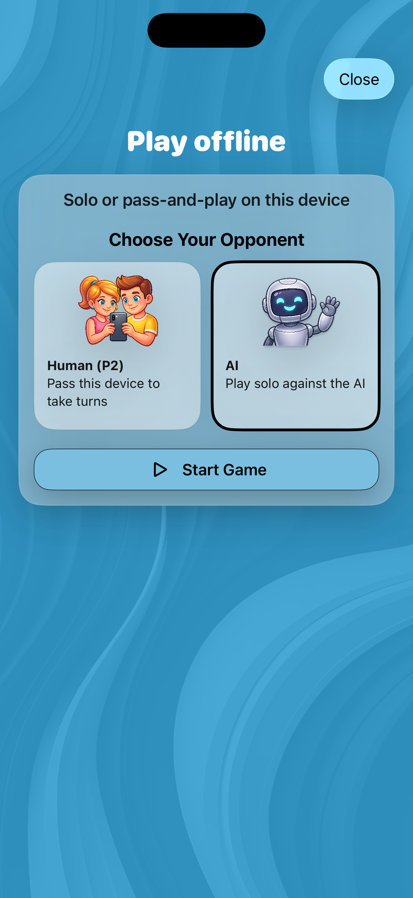
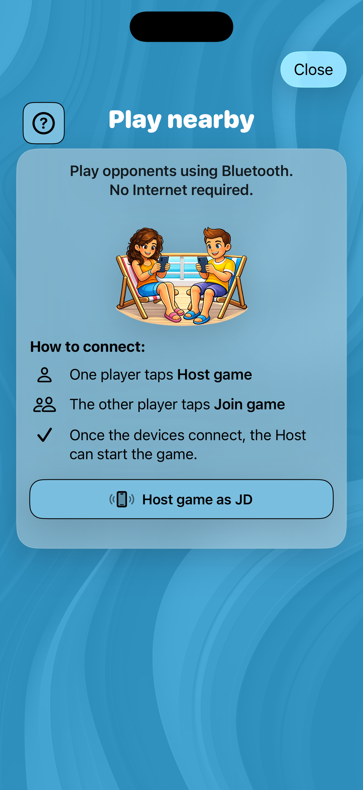
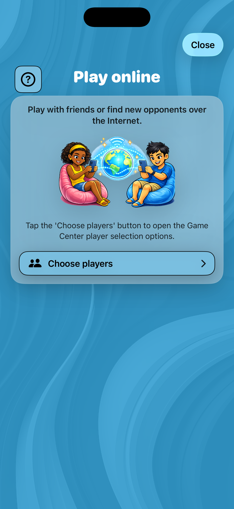
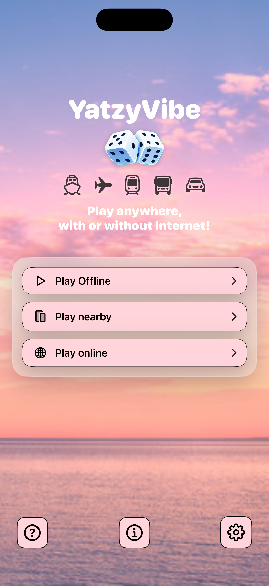
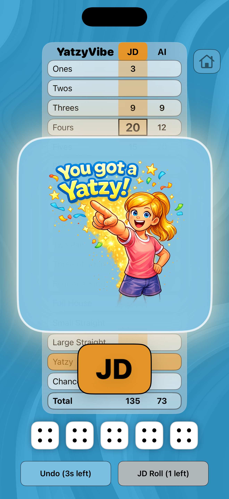
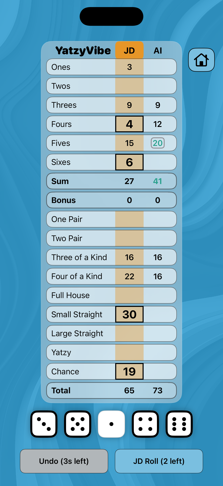
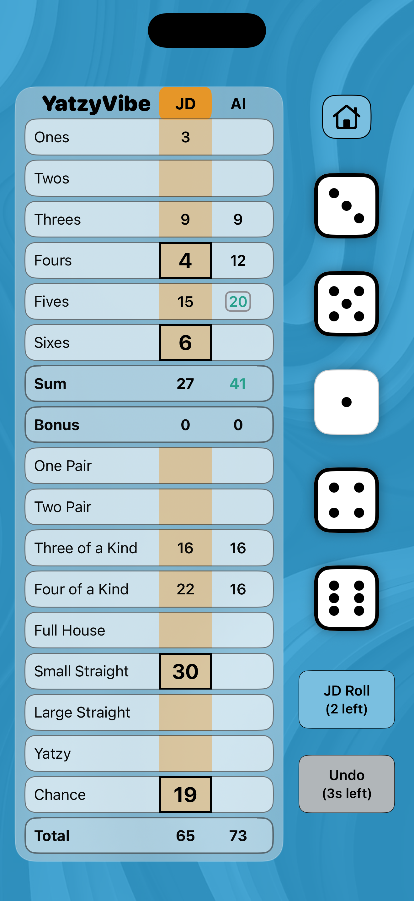
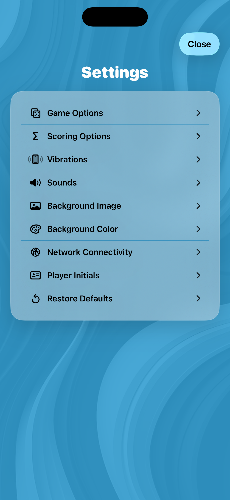
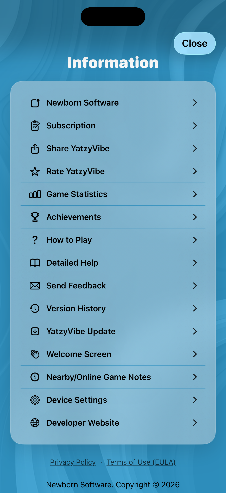

Features
- Play opponents nearby or online.
- Play Offline - always free.
- Play Nearby without internet — ideal for flights and cruises.
- Play online with Game Center - ideal for remote friends and random match ups.
- No ads
- Extensive customization (backgrounds, colors, sounds, vibrations)
- AI opponent with adjustable difficulty (Beginner, Normal, Expert)
- Classic (13) or Enhanced (15) game modes
- Game statistics and offline autosave
- Achievements recognition and tracking.
- AI 'best move' recommendations to help you learn
See Section 4 in the Complete Guide below for all features.
Fast start guide
- On the Home screen, select Play Offline or Play Nearby or Play Online
- Tap the dice to hold/unhold. Roll up to three times. Select a score
- Score all categories. The highest total score wins.
See Section 2 in the Complete Guide below for detailed instructions.
Rules & Scoring
Upper Section: Ones-Sixes (sum of matching dice). Reach 63+ for a Bonus (50 by default).
Lower Section includes One Pair and Two Pair (Enhanced mode), Three/Four of a kind, Full House, Small/Large Straight, Yatzy, and Chance.
Customize scoring rules and bonus values in Settings to match your preferred play style.
See Section 1 in the Complete Guide below for full scoring details.
Settings
- Game Options: Categories (13/15), Dice position, Dice face, Dice jump, Auto-roll, Undo score, Roll button position, Timer, Achievement banners
- AI Settings: Skill level, Think time, Best move suggestions.
- Visual Customization: Preset background images, custom photo background, image strength, background color presets, saved custom background colors, dice color and upper section score color.
- Sounds & Vibrations: Dice roll and your turn reminder sounds, and per-event vibration toggles.
- Scoring Options: Rule variations.
- Network: Nearby connection mode can be Bluetooth or Wi-Fi. Both nearby devices must use the same mode.
See Section 5 in the Complete Guide below for all settings details.
YatzyVibe Help- Complete Guide
(Click the ▶ to expand the sections below.)
1. Rules of Play
If you are new to Yatzy, read this section first. If you are already familiar with the game, skip to Section 2 — Quick Start Guide.
How to Play- The goal of the game is to score the highest total by rolling five dice and placing them into the best possible scoring categories. If you are familiar with the card game Poker, the scoring categories are similar to Poker "hands" (for example, three-of-a-kind, four-of-a-kind, full house, and straights). The game is played by up to two players. Players alternate turns until every category on the score sheet has been filled.
- Roll all five dice at the start of your turn.
- Tap any dice you wish to hold.
- Roll the remaining dice.
- You may roll up to three times per turn.
- You may score at any time during your turn, but you must score after your third roll.
- After scoring, the next player begins their turn.
- Continue alternating turns until all scoring categories are filled.
- The score sheet contains two sections. Each category may be used only once per game.
- You are not required to meet a category's criteria. However, if you choose a category without meeting its requirements, you will score zero points for that category.
- Upper Section - Ones through Sixes: Score the total of all dice showing the selected number.
- Upper Bonus: Score +50 bonus points (default) when your Upper Section subtotal reaches 63 or more. You may change this bonus to +35 points in Settings.
- Lower Section - Combination categories:
- One Pair (Enhanced mode only): Score 10 points for the pair (default). You may change this in Settings to score the sum of the two dice in the pair.
- Two Pair (Enhanced mode only): Score 20 points for any two pairs (default). You may change this in Settings to score the sum of the four dice in the two pair.
- Three of a Kind: Score the sum of all five dice (default). You may change this in Settings to score the sum of the three matching dice.
- Four of a Kind: Score the sum of all five dice (default). You may change this in Settings to score the sum of the four matching dice.
- Full House: Dice consist of Three of a kind and a One Pair. Score 25 points (default). You may change this in Settings to score the sum of all five dice.
- Small Straight: Score 30 points (default). You may change this in Settings to score 15 points.
- Large Straight: Score 40 points (default). You may change this in Settings to score 20 points.
- First Yatzy: All five dice match. Default score: 50 points plus the sum of all five dice. You may change this in Settings to 50 points.
- Additional Yatzys: All five dice match. Default score: 0 points. You may change this in Settings to 100 points. The additional Yatzy may be scored in any eligible category. You will score the category points plus the additional Yatzy bonus points. The number of additional Yatzys is noted using a superscript (e.g. 1) next to the Yatzy score.
- Chance: Score the sum of all five dice.
- Before placing a score, the grid shows a preview of possible scores that can be taken, in large black font with a black border.\.
- The Sum row automatically totals your Upper Section scores.
- If you reach 63 or more points, you earn the bonus (default 35 points). You may change the bonus to 50 points in Settings.
- To help track progress:
- With Upper section score color On: black = exactly on target, red = below target, green = above target.
- With Upper section score color Off: taken Upper Section and Sum scores are always black for higher viewing contrast in bright light situations.
The opponent's most recent score is highlighted with a gray box.
2. Quick Start Guide
Follow these steps to begin:
- When launching the game for the first time, tap 'Start playing!' on the Welcome screen.
- Enter your Player Initials (two characters) and tap Continue.
- The Home screen appears.
The Welcome and Player Initials screens will not automatically appear again unless you reinstall the app. Note: The Welcome screen can be redisplayed from the Information screen.
Choosing a Play ModeOn the Home screen, select:
- Play offline.
- Play nearby.
- Play online.
Choose Play Offline to:
- Share one device.
- Play against the built-in AI.
Choose Play Nearby to:
- Connect via Bluetooth (default) or Wi-Fi.
- Play anywhere without internet — ideal for flights and cruises.
Choose Play Online to:
- Play online using Game Center and an Internet connection.
- Play anywhere internet is available — ideal for playing with remote friends and new opponents.
Select your opponent:
- Human (Player initials P2).
- AI (Player initials AI).
Tap Start Game.
Starting a Nearby Game- One player selects Host as Player xx.
- The other player selects Join Game with Player xx.
- The Host taps Start Game with yy.
- Important: Make sure all players are signed into Game Center and have Notifications turned on (Settings/Notifications/Game Center).
- Tap Play online.
- Sign in to Game Center if iOS asks you to sign in.
- Tap Choose players to open Game Center player selection. You will have 60 seconds to complete your Game Center selections.
- Tap SharePlay to start a YatzyVibe game with current FaceTime participants.
- Tap Invite Players to select specific friends, then tap the up-arrow to send the invitation.
- Invitees should tap the Game Center invitation notification to join.
- Both players need an Internet connection.
- Tap Quick Match to let Game Center find an available opponent automatically.
On iPhones a vibration will be felt when a player can Join the game and when the Host can Start the game.
Note: For Online Quick Match games, the app's default Settings will be used for both players. For Nearby and Online (SharePlay and Invite Players) games, the initiator's game Settings will be used for both players, including: Categories, Game Timer, Straight/Two Pair rules, and Scoring Options. Your personal app settings will be restored after the game.
Allow Bluetooth and Wi-Fi accessFollow these steps the first time you tap Play Nearby:
- Tap Play Nearby.
- When the Allow YatzyVibe Access screen appears, tap Continue.
- When prompted for permissions, tap Allow for both Wi-Fi and Bluetooth so nearby devices can connect.
The Allow YatzyVibe Access screen will not automatically appear again unless you reinstall the app.
During Gameplay- Tap a die to hold or release it.
- Roll the remaining dice.
- Tap any row to place your score.
- Use Undo within the countdown timer if needed (default 3 seconds).
Continue until all categories are scored.
End of GameThe Winner screen displays final scores.
- The trophy icon wobbles for 5 seconds on the winner's device.
- Select Play Again (both players must choose Yes).
- Select Home to return.
- Select View Game Statistics to see stats.
- Select View Achievements to see progress.
- Select View Score Sheet to review.
Offline games autosave. Nearby and Online games do not.
Home ScreenUse the three icons at the bottom of the Home screen to navigate the app:
- ? (How To Play) icon: Tap this icon to open the How To Play screen.
- i (Information) icon: Tap this icon to open the Information screen. From here, you can:
- View other Newborn Software games.
- Manage your subscription.
- Share YatzyVibe (via Email, Messages, or Copy Link).
- Rate YatzyVibe.
- View Game Statistics.
- View Achievements.
- View How to play.
- View Detailed Help
- Send feedback.
- Open Version History.
- Check for YatzyVibe version updates.
- View the Welcome screen again.
- View the Nearby/Online game notes.
- Open your device Settings to adjust YatzyVibe's Bluetooth and Local Network permissions.
- View the developer website.
- Gear (Settings) icon: Tap this icon to open the Settings screen.
3. Tips & Strategy
- Complete upper rows early to secure the bonus.
- Hold matching dice to build stronger combinations.
- Avoid wasting straights.
- Use Chance strategically for difficult rolls.
4. YatzyVibe Features
YatzyVibe is a modern five-dice game for iPhone and iPad.
Key Features- Play Nearby or Online (5 game free trial).
- Play Offline - always free.
- Play nearby opponents without internet — ideal for flights and cruises.
- Play online opponents with Game Center - ideal for remote friends and random match ups.
- No ads.
- Extensive customization.
- AI with adjustable skill level.
- Adjustable AI 'think time'.
- AI 'best move' recommendation for dice and scoring.
- Adjustable Game Timer.
- Horizontal or vertical dice orientation.
- Undo Score feature.
- Custom backgrounds and colors.
- Custom vibration and sound settings.
- Detailed game statistics by play mode- Offline, Nearby, Online and Quick Match.
- Achievements recognition and tracking.
- Offline autosave.
- Allow users to temporarily background the app without exiting the game.
5. Settings Reference
- Categories: Enhanced (15) (default) or Classic (13).
- Dice Position: Select Horizontal (default) or Vertical.
- Dice Face: Pips (default) or Numbers.
- Dice Jump:On (default) or Off.
- Auto First Dice Roll: On (default) or Off.
- Undo Score Countdown Timer: 0-5 seconds. Default: 3 seconds.
- Roll Button PositionRight (default) or Left on the Horizontal dice score grid.
- Game Timer: Choose Off (default), 30, 45, 60, 75, or 90 seconds.
- Show Achievements banner: On (default) or Off.
- Show Best Move: On or Off (default).
- AI Skill Level: Beginner, Normal (default), Expert.
- AI Think Time: Speed at which the AI rolls the dice and places the score. Default: 0.5 seconds.
- Two Pair: Format: 1-1-1-1 (default) (any two pairs) or 1-1-2-2 (two distinct pairs).
- Small Straight: Any 4 dice sequence (default) or 1-2-3-4-5.
- Large Straight: Any 5 dice sequence (default) or 2-3-4-5-6.
- Scoring Rule Variations: Lower Section categories' scoring rule variations. See section 1, Scoring.
- Scoring Options: Adjust points vs sum scoring for combinations. See section 1, Scoring.
- Vibrations & Sounds: Toggle individual feedback options.
- Background Image: Choose presets or photos, and Overlay Strength. Save up to 9 custom images.
- Background Color: Choose presets or create custom RGB colors. Save up to 9 custom colors. Choose the App Button Color, held dice color, and Upper section score color.
- Network Connectivity: Select Bluetooth (default) or Wi-Fi. Use Reset Network if needed.
- Player Initials: Adjust the player initials if needed.
- Restore Default Settings: Restore all the Settings to their original defaults (except for Custom Colors and Custom Images).
6. Subscription Management
Access via Home → Information (i) → Manage Subscription.
- 5 Nearby or Online games free trial.
- 1-month, 3-month, and 12-month plans.
- Auto-renewal unless canceled 24 hours before renewal.
- Restore Purchases available.
- Play Nearby and Online locked after trial, unless subscribed.
- Play Offline remains free.
- Use of Premium Settings (Background Image and Background Color) require a subscription.
7. FAQ
- Devices could not connect Nearby using Bluetooth/Wi-Fi.
- Did both players Host/Join within 60 seconds?
- Enable Bluetooth and Local Network in device Settings → Apps → YatzyVibe.
- Did both players use the same YatzyVibe connection type (Bluetooth or Wi-Fi)?
- Are both device's Bluetooth and Wi-Fi turned on?
- If Wi-Fi keeps failing, select Bluetooth in the YatzyVibe Settings.
- Try Reset Network.
- Reinstall teh app if needed.
- Devices could not connect Online using Game Center.
- Are both players signed into Game Center?
- Do both players have Game Center Notifications turn on (Settings/Notifications/Game Center)?
- Players wanting to join an Online game, should wait on the Play Online screen for their invitation.
- Allow YatzyVibe Access screen?
Enable Bluetooth and Local Network in device Settings → Apps → YatzyVibe.
- Leaving the app?
Offline autosaves. Nearby or Online does not.
8. Accessibility & Support
- High-contrast text.
- Adjustable vibrations.
- Feedback available via Information → Send Feedback.
9. Easter Eggs
Try tapping or tap and hold:
- The YatzyVibe logo (Home screen).
- The dice (Home screen).
- The YatzyVibe text (score grid).
- The trophy icon (Winner screen).
Feedback
Email us at contact@newbornsoftware.com.